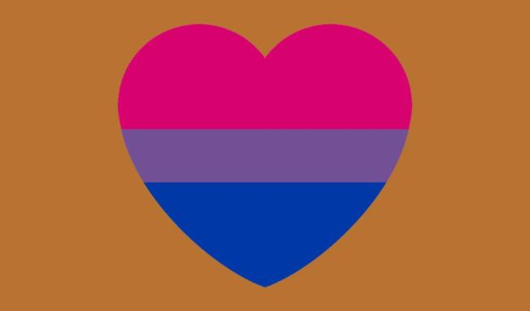

About The Writer and Founder
Fitz Vacker is a friendly bisexual male 13 year old who tries to be open-minded. His pronouns are he/him. He will try to accept people as they are, and feels that everyone has a story that deserves to be heard. He also thinks that everyone has their own problems and stress, and everyone makes mistakes, so no one should be judged by their mistakes or differences. Fitz almost always is reading a book. His favorite genre is fantasy, but he reads some sci fi and paranormal romance. He is very proud of his skill at reading and comprehension, and is often referred to as very smart and intelligent. Fitz also loves camping and nature, especially in a hammock. Fitz enjoys coding as well. Note: Fitz Vacker is a pseudonym.
"Panache Desai Empathy and
compassion allows us to
hold a space of love in
the midst of whatever is
arising" by
symphony of love
is
licensed under CC BY-SA 2.0

"A little kindness goes a
long way"
by Ed Yourdon
is
licensed under
CC BY-NC-SA 2.0
"Katherine Henson Having a
soft heart in a cruel world
is courage, not weakness"
by
symphony of love is
licensed under
CC BY-SA 2.0
"Dalai Lama Compassion
brings us peace of mind.
It brings a smile to our
face and genuine smiles
bring us closer together"
by symphony of love is
licensed under CC BY-SA 2.0
"simplicity" by Cornelia Kopp
is licensed under
CC BY 2.0